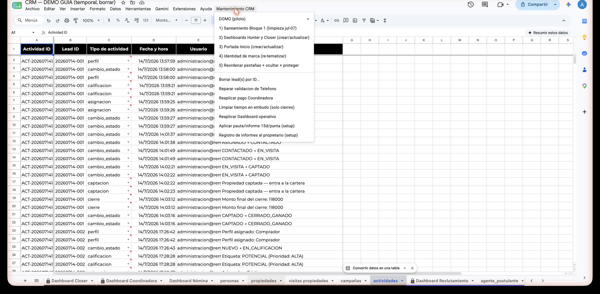

Reglas de oro del CRM
Estas 10 reglas protegen el sistema que calcula todo: leads, propiedades, comisiones y reportes. No son sugerencias — son las líneas que nunca se cruzan. Las dos primeras son las más importantes de todas.
Las 2 reglas que sostienen todo
⛔ Nunca borres ni edites la fila 2 de personas ni de propiedades.
Esa fila guarda las fórmulas que calculan TODO el CRM: comisiones, semáforos, dashboards. Si se toca, el sistema entero deja de calcular.
⛔ Nunca borres filas de leads a mano. Usa el menú Mantenimiento CRM → "Borrar lead(s) por ID…".
El menú borra con orden: elimina el lead y también su rastro en las otras hojas. Borrar la fila a mano deja datos huérfanos y puede arrastrar fórmulas de las filas vecinas.

Las otras 8 reglas
⛔ Nada de "OFICINA", "x" ni nombres escritos a mano en Closer asignado.
Solo vale un nombre elegido de la lista. Así cada lead tiene un responsable real con nombre y apellido — y los reportes cuadran.
Los desplegables mandan: valor fuera de lista = rechazado.
Si escribes algo que no está en la lista, el CRM lo rechaza con un mensaje. No es capricho: mantiene los datos limpios para que las métricas digan la verdad.
Las columnas AUTO (grises) no se corrigen a mano.
El sistema las revierte solo. Si ves un dato mal en una columna gris, avisa a Dirección — ahí se corrige de raíz, no encima.
El retraso de ~10 segundos es NORMAL.
Es Google procesando, no una falla del CRM. Teclea, espera unos segundos y lo automático aparece solo. No repitas el dato ni "ayudes" a mano.
La hoja actividades es bitácora: solo se lee.
Ahí queda registrado, solo, todo lo que pasa en el CRM. Si se edita, se pierde la historia real de cada lead.
Todo monto va con su Moneda (PEN o USD).
El sistema convierte a soles con el tipo de cambio de Config. Un monto sin moneda entra mal a las métricas y distorsiona los reportes.
Si el CRM revierte tu cambio y muestra un aviso: LEE el mensaje.
El aviso dice el motivo exacto y qué sí puedes hacer. Leerlo te ahorra el segundo intento fallido.
Ante la duda: NO borres.
Si te equivocaste, Cmd+Z de inmediato. Si ya no se puede deshacer, avisa a Dirección: hay respaldos y se recupera.